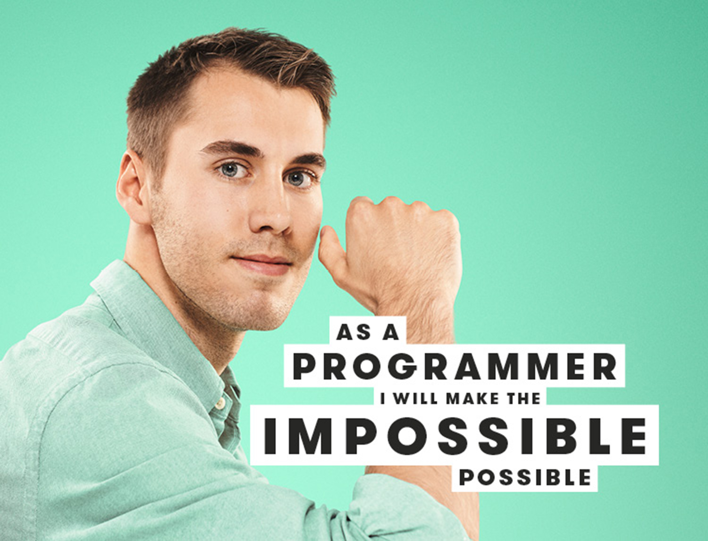
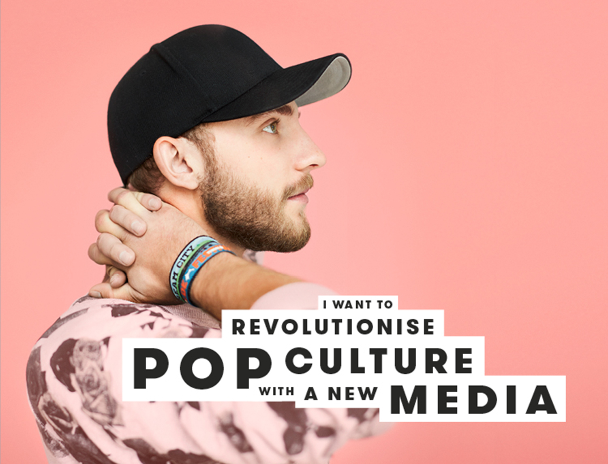

Design. Construct. Create.


The multimedia design programme is built on four core areas: Interaction development, design and visualisation, communication and presentation and business. You learn to work with frontend development, User Interface Design (UI), User Experience Design (UX) and you understanding the business context. During your studies you are in close contact with businesses when creating projects and writing papers in cooperation with a specific company or organisation. During the studies you will have an internship period at a company in order to mobilise your competencies in practice. We cooperate with a wide range of business types including agencies, companies, and cultural organisations.